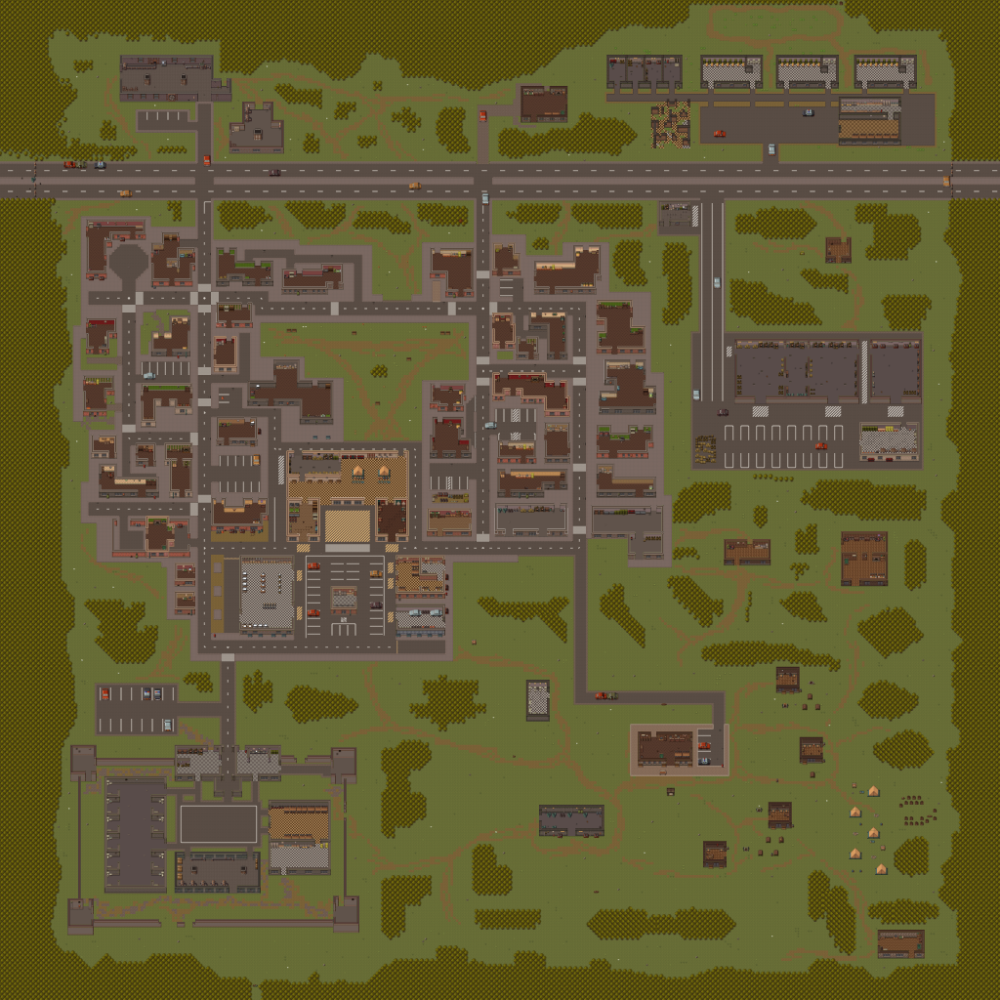
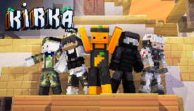
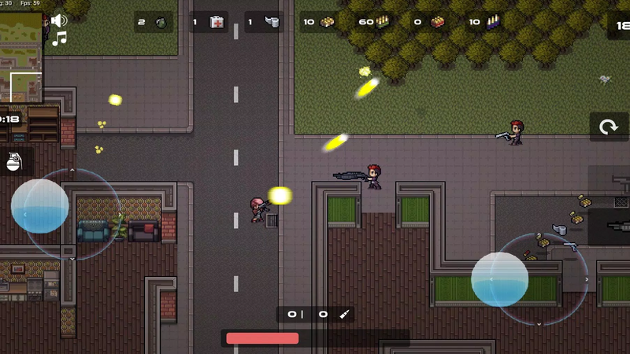

Introduction
Battlepoint.io is a fast-paced, multiplayer top-down shooter that drops you into an explosive, shrinking arena. Unlike traditional battle royales, this game emphasizes rapid reflexes, tight top-down combat, and quick decision-making. Players love it for its adrenaline-fueled gameplay, where every second counts. You must scavenge for weapons, manage a compact inventory, and outsmart opponents in chaotic, close-quarters firefights. The unique blend of arena shooter mechanics with battle royale survival elements creates a thrilling experience where explosive eliminations and strategic positioning determine the ultimate victor. It’s accessible yet highly competitive, making it a favorite for quick, intense gaming sessions.
Getting Started

Starting in Battlepoint.io is straightforward but requires immediate awareness. Upon spawning, use WASD to navigate the chaotic, shrinking arena. Your primary goal is to scavenge for weapons and ammunition before engaging any enemies. Press 'E' to pick up essential gear and weapons scattered across the map. Mastering your inventory is crucial for survival; left-click health packs in your menu to heal during fights, and right-click to drop unwanted items to keep your loadout streamlined. When you spot an enemy, aim and shoot using your mouse. Press 'G' to throw grenades, which is vital for flushing out campers or finishing off low-health targets behind cover. Always keep an eye on the arena boundaries, as the shrinking zone will constantly force you into intense, close-quarters encounters. Focus on securing a reliable primary weapon and a few medkits early on to ensure you are fully prepared for the inevitable mid-game chaos.
Basic Tips
1. Prioritize Shotguns Early: In the early game, grab short-range weapons like shotguns. They are devastating in the tight corridors and close-quarters zones of the shrinking arena, allowing you to eliminate opponents quickly. 2. Manage Your Inventory Space: Don't hoard useless ammo. Right-click to drop items you don't need so you can quickly pick up and use health packs during a firefight without fumbling through a cluttered menu. 3. Use Grenades Proactively: Don't save grenades for emergencies. If you see an enemy hiding behind a rock or crate, press 'G' to throw a grenade and force them out into the open where you can finish them. 4. Stay Near the Zone Center: Avoid running along the very edge of the safe zone. You are an easy target for snipers. Move through the middle of the shrinking arena to minimize the angles from which enemies can attack you.
Advanced Strategies

1. Weapon Synergy and Loadout Balancing: Always carry a primary shotgun or SMG for close-range dominance and a secondary long-range rifle for picking off players across the arena. This ensures you are never caught at a disadvantage when the zone shifts. 2. Baiting and Counter-Aiming: Use the noise of your own gunfire or a thrown grenade to bait an opponent's attention. While they reposition or react to the explosion, pre-aim the corner they are likely to peek from to secure an easy kill. 3. Edge-Playing the Shrink: Instead of running straight to the center when the zone shrinks, move along the edge but use natural cover. This allows you to eliminate desperate players running into the open while keeping your back protected against the boundary. 4. Inventory Micro-Management: During lulls in combat, pre-arrange your inventory. Keep health packs in the exact same slot every time so your muscle memory allows you to click and heal instantly without looking away from the action.
Pro Tips

1. Audio Cues and Footstep Tracking: The top-down perspective hides visual cues, so rely heavily on audio. Use the directional sound of footsteps and gunfire to track enemy rotations through the shrinking zone. 2. The 'Heal and Push' Technique: Never heal in the open. Throw a grenade to create cover or obscure vision, heal during the distraction, and immediately push the enemy while they are disoriented. 3. Baiting the Zone: Let the shrinking zone damage you slightly to bait a greedy opponent into taking an easy shot. Once they commit, use your pre-placed escape route or superior healing to turn the 1v1 into a trap.
Conclusion
Battlepoint.io offers a uniquely thrilling top-down battle royale experience that tests your reflexes, strategy, and inventory management. Whether you are scavenging for shotguns or outsmarting opponents with tactical grenades, every match is a high-stakes adrenaline rush. Jump into the arena, master the mechanics, and prove your dominance. Play Battlepoint.io today and become the ultimate champion of the battleground!